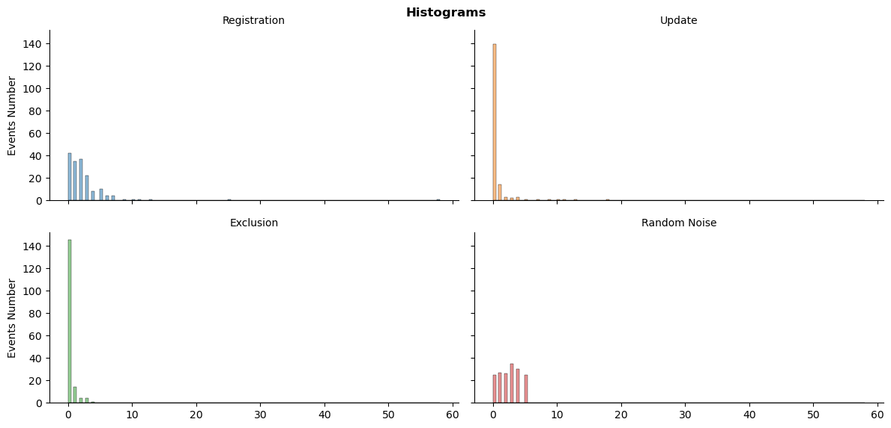
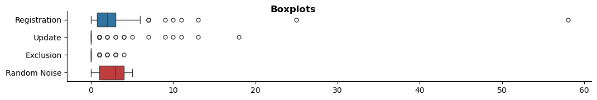
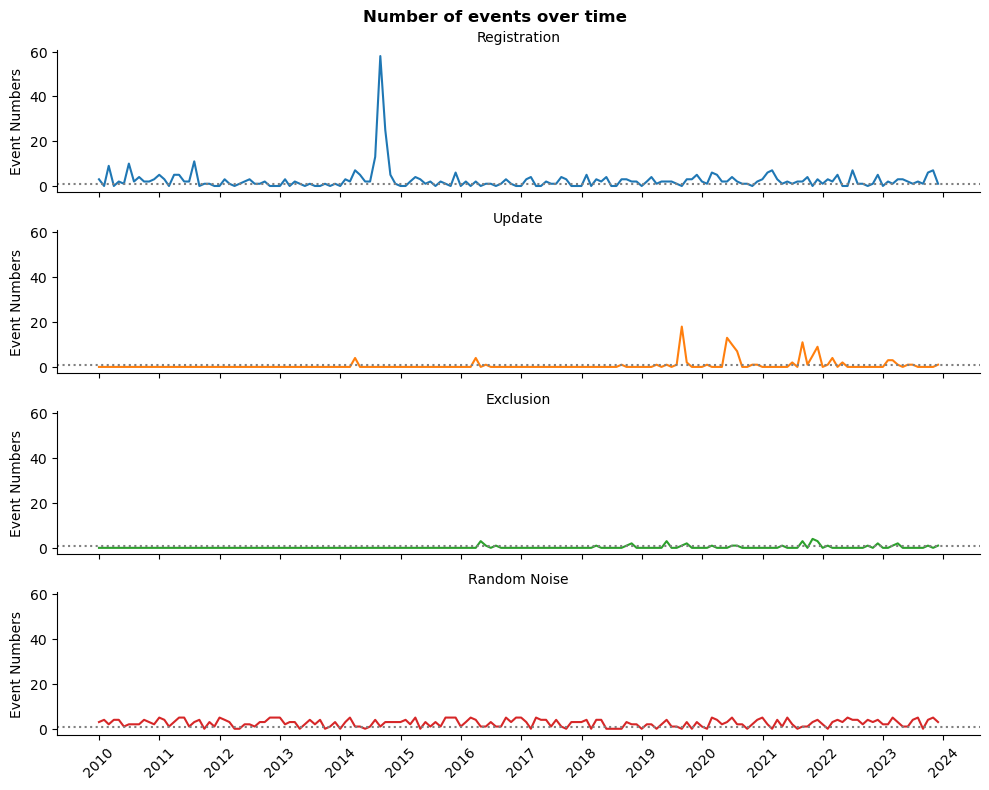
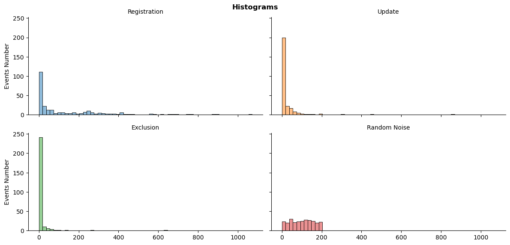
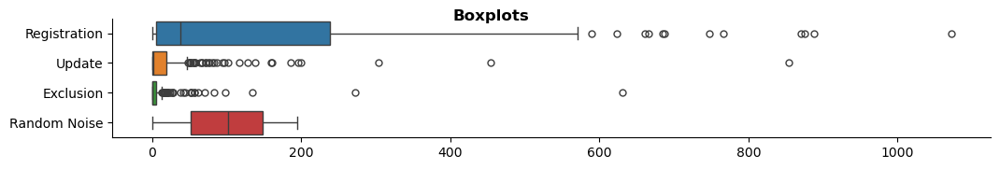
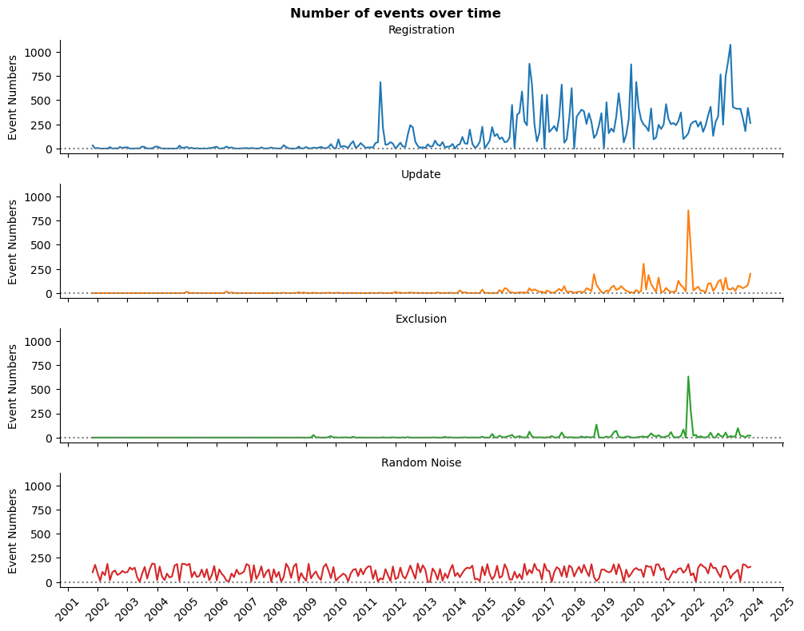

Часовыя шэрагі: імпарт і ачыстка даных
12 снежня 2023
Катэгорыя: Артыкулы
Зменены: 12.12.2023
Меткі:
Тэма: ІР ІС
Частка 2 з 2.
Папярэднія артыкулы тэмы:
Загрузка неабходных бібліятэк
import pandas as pd
import numpy as np
import matplotlib.pyplot as plt
import matplotlib.dates as mdates
import seaborn as sns
import os
%matplotlib inline
Вызначэнне ўласных функцый
Функцыя стварэння фрэйма даных часовых шэрагаў
def time_series(df):
'''Creates time series data frames with random noise'''
# спрашчэнне назваў слупкоў
df_cols = ['reg', 'upd', 'exc']
min_df = min(df[df_cols].min())
max_df = max(df[df_cols].max()) + np.timedelta64(1, 'D')
# стварыць пусты індэкс даты і часу
df_ts = pd.date_range(start=min_df, end=max_df, freq='D', name='date').to_frame(name='ids')
for col in df_cols:
# стварыць скрыю даты і часу для кожнага слупка
temp_df = df.groupby(col)['num'].count().to_frame(name=col)
# аб'яднаць серыі ў адзін фрэйм даных
df_ts = df_ts.merge(temp_df, how='left', left_index=True, right_index=True)
# выдаліць часовы індэкс
df_ts.drop(['ids'], axis=1, inplace=True)
# NaN можа разглядацца зманліва, і ў нашым выпадку нулі маюць большы сэнс
df_ts[df_cols] = df_ts[df_cols].fillna(0).astype(int)
# перафарміраваць да месячных даных, у адваротным выпадку гэтых даных недастаткова для вывадаў
df_ts = df_ts.resample('M').sum()
# стварыць выпадковы шум для параўнання
mean_rand = (int(np.max(df_ts.std())) + 1)
# стварыць выпадковы стан для прайграванасці
np.random.seed(seed=42)
df_ts['rand'] = np.random.randint(0, mean_rand, df_ts.shape[0])
return df_ts
Функцыя стварэння графікаў
def ts_plot(df, kind):
'''Creates one of three seaborn multi-plots'''
# melted dataframe лягчэй выкарыстоўваць у seaborn
melted_df = pd.melt(df, value_vars=['reg', 'upd', 'exc', 'rand'],
var_name='Event', value_name='Number', ignore_index=False)
melted_df.Event.replace(to_replace={'reg':'Registration',
'upd':'Update',
'exc':'Exclusion',
'rand':'Random Noise'}, inplace=True)
if kind == 'histogram':
g = sns.displot(data=melted_df, x='Number', col='Event',
col_wrap=2, hue='Event', kind='hist',
height=3, aspect=2, legend=False)
g.set_axis_labels('', 'Events Number')
g.set_titles('{col_name}')
g.fig.subplots_adjust(top=0.93)
g.fig.suptitle('Histograms', fontweight='bold')
elif kind == 'lineplot':
g = sns.relplot(data=melted_df, x='date', y='Number',
row='Event', hue='Event', kind='line',
height=2, aspect=5, legend=False)
g.set_axis_labels('', 'Event Numbers')
g.set_titles('{row_name}')
g.fig.subplots_adjust(top=0.93)
g.fig.suptitle('Number of events over time', fontweight='bold')
for ax in g.axes.flat:
ax.axhline(y=1, color='gray', linestyle=':')
# без двух наступных радкоў не ўсе гады пазначаны на восі іксаў
ax.xaxis.set_major_locator(mdates.YearLocator())
ax.xaxis.set_major_formatter(mdates.DateFormatter('%Y'))
ax.xaxis.set_tick_params(rotation=45)
elif kind == 'boxplot':
g = sns.catplot(data=melted_df, x='Number', y='Event',
kind='box', hue='Event', height=2,
aspect=5.5, legend=False)
g.set_axis_labels('', '')
g.fig.subplots_adjust(top=0.93)
g.fig.suptitle('Boxplots', fontweight='bold')
else:
g = 'Няма чаго паказаць. Калі ласка, удакладніце: histogram, lineplot, ці boxplot'
return g
Загрузка даных
Загрузка слупкоў з унікальнымі лічбамі і датамі
# спрасціць назвы слупкоў
cols = ['num', 'reg', 'upd', 'exc']
# даныя, звязаныя з рэгістрацыяй, абнаўленнем і выключэннем інфармацыйных сістэм
sys_df = pd.read_csv('data/inf_sys.csv', parse_dates=[1,2,3], usecols=['numberOnRegistration',
'dateOnRegistration',
'dateActyalization',
'dateExclude'])
sys_df.columns = cols
# даныя, звязаныя з рэгістрацыяй, абнаўленнем і выключэннем інфармацыйных рэсурсаў
res_df = pd.read_csv('data/inf_res.csv', parse_dates=[1,2,3], usecols=['numberOnRegistration',
'dateOnRegistration',
'dateActualization',
'dateExclude'])
res_df.columns = cols
Робім часовы шэраг з неапрацаваных лічбаў
# Фрэйм даных часововага шэрагу інфармацыйных сістэм
sys_df_dt = time_series(sys_df)
# Фрэйм даных часововага шэрагу інфармацыйных рэсурсаў
res_df_dt = time_series(res_df)
Агляд падзей з інфармацыйнымі сістэмамі
Агульная колькасць размеркаванняў падзей
ts_plot(sys_df_dt, 'histogram')
plt.show()

Размеркаванне выглядае моцна скажоным, асабліва ў параўнанні з выпадковымі лічбамі.
Падрабязная інфармацыя пра агульную колькасць падзей
ts_plot(sys_df_dt, 'boxplot')
plt.show()

Колькасць рэгістрацый мае большую дысперсію, аднак даныя маюць велізарныя выкіды.
# Давайце паглядзім на нашы выкіды
sys_df_dt.reg.sort_values(ascending=False)[:3]
date
2014-08-31 58
2014-09-30 25
2014-07-31 13
Name: reg, dtype: int64
Тройка найбольшых выкідаў - гэта другая палова 2014 года.
Штомесячныя змены падзей у часе
ts_plot(sys_df_dt, 'lineplot')
plt.show()

Шэрая пункцірная лінія азначае як мінімум адну падзею ў месяц. Як мы бачым, выключэнне з рэестра або змяненне запісу - даволі рэдкая падзея.
У нас ёсць адна незвычайная вяршыня, якую пазней можа спатрэбіцца зрабіць больш гладкай. Тым не менш, графік выглядае стацыянарным: не дэманструе відавочнай тэндэнцыі і сезоннасці.
Такім чынам, мы можам пабудаваць прагнастычную мадэль. Аднак найбольш перспектыўным з’яўляецца колькасць рэгістрацыі ў месяц.
Давайце паглядзім на іншы фрэйм даных.
Агляд падзей інфармацыйных рэсурсаў
Агульная колькасць размеркаванняў падзей
ts_plot(res_df_dt, 'histogram')
plt.show()

Размеркаванне таксама скажонае. Аднак колькасць рэгістрацый больш збалансаваная.
Падрабязная інфармацыя пра агульную колькасць падзей
ts_plot(res_df_dt, 'boxplot')
plt.show()

Нягледзячы на выкіды, дысперсія колькасці рэгістрацыі бліжэй да выпадковых цэлых лічбаў.
Штомесячныя змены падзей у часе
ts_plot(res_df_dt, 'lineplot')
plt.show()

У нас можа быць тэндэнцыя, аўтакарэляцыя і сезоннасць колькасці рэгістрацый. Колькасць мадыфікацый запісаў стала больш-менш стабільнай з 2018 года. Астатнія даныя ўяўляюць сабой больш рэдкія падзеі.
Заключэнне
У нас дастаткова даных для аналізу часовых шэрагаў рэгістрацыі інфармацыйных сістэм і рэсурсаў. Аднак пажадана разглядаць іх асобна, таму што яны моцна адрозніваюцца па сярэднямесячнай колькасці і даўгаце.
Рэгістрацыя інфармацыйных сістэм выглядае стацыянарнай. Такім чынам, нам можа спатрэбіцца мадэль ARIMA.
Інфармацыйныя рэсурсы могуць мець тэндэнцыю, аўтакарэляцыю і сезоннасць. Вось чаму мы будзем выкарыстоўваць мадэль SARIMA.
Нашым наступным крокам будзе мадэляванне гэтых даных для тлумачэння і прагназавання.
# захаваем змененыя даныя для будучага аналізу
os.makedirs('data', exist_ok=True)
sys_df_dt[['reg', 'rand']].to_csv('data/sys_df_dt.csv')
res_df_dt[['reg', 'rand']].to_csv('data/res_df_dt.csv')